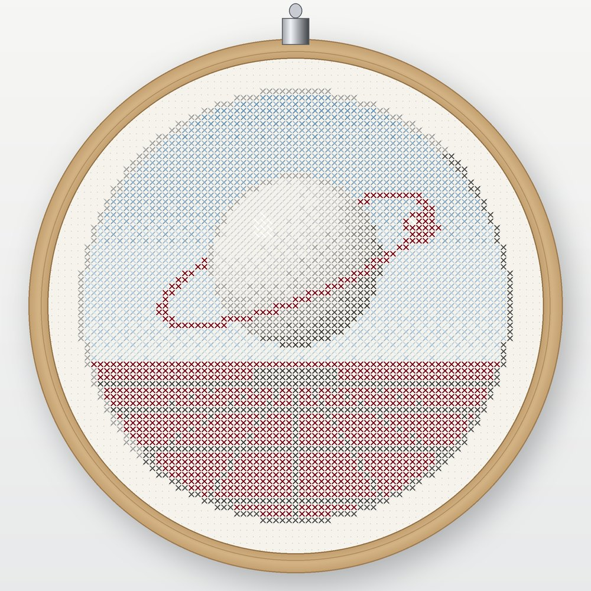

Transmission 01 · PDF pattern
Satellite No. 01
A chrome planet keeps its orbit above a horizon that never came.
- Size
- 71 × 71 stitches · 5.1" on 14-count
- Threads
- 12 DMC colours, one skein each
- Level
- Confident beginner · full stitches only
- Includes
- 9-page PDF in US Letter and A4
$8
Arriving on Etsy soon